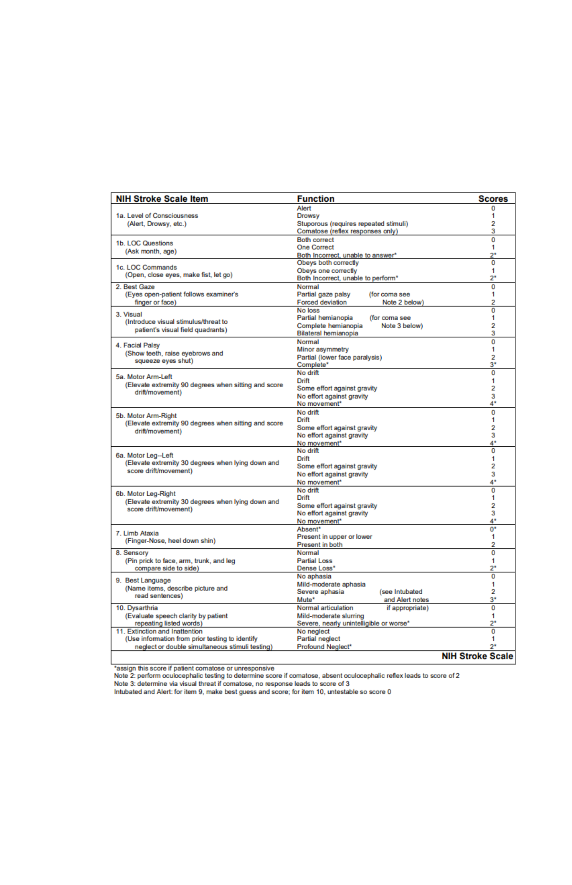
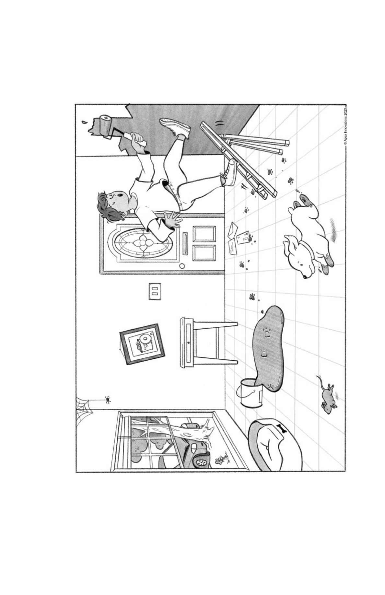
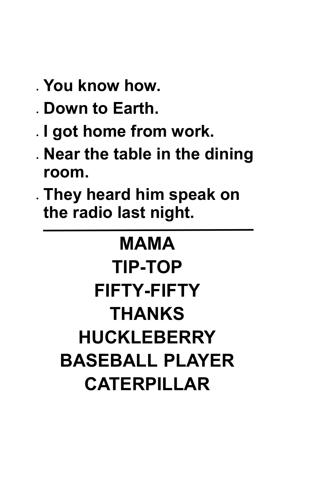
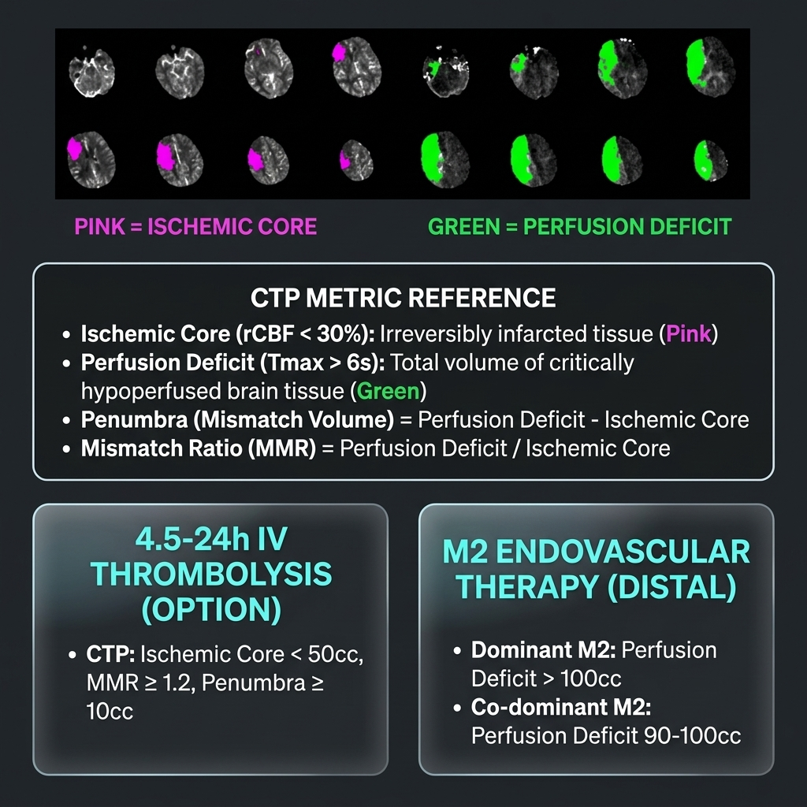

| Absolute Contraindications | |
|---|---|
| CT with hemorrhage | Acute intracranial hemorrhage |
| CT with extensive hypodensity | Clear hypodensity responsible for symptoms |
| Neurosurgery <14 days | Risk of intracranial or spinal hemorrhage |
| Acute spinal cord injury <3 months | Risk of spinal hemorrhage |
| Intra-axial neoplasm | Primary or metastatic brain tumor |
| Infective endocarditis | High risk of mycotic aneurysm rupture |
| Severe coagulopathy | Plt <100K, INR >1.7, aPTT >40s, PT >15s |
| Aortic arch dissection | Risk of aortic rupture or extension |
| Moderate-severe TBI <14 days | GCS <13 OR hemorrhage/contusion/skull fracture |
| Amyloid immunotherapy / ARIA | ICH risk unknown |
| Relative Contraindications | |
| Pre-existing disability/frailty | Benefit/risk remains uncertain |
| DOAC exposure <48h | Safety unknown; limited observational data only |
| Prior ischemic stroke <3 months | Weigh timing and size of prior infarct |
| Prior ICH | CAA = higher risk; HTN/modifiable etiology may have benefit |
| Major non-CNS trauma (14d–3mo) | Surgical consultation recommended; risk of systemic bleed |
| Major non-CNS surgery <10 days | Risk of surgical site hemorrhage |
| GI/GU bleeding <21 days | GI/GU consult to verify bleeding is treated/modified |
| Arterial/dural puncture <7 days | Arterial (non-compressible site): safety unknown. Dural (LP): acceptable. |
| Intracranial vascular malformations | Safety unknown for unruptured/untreated malformations |
| Intracranial arterial dissection | Safety unknown |
| Recent STEMI <3 months | Cardiology consult; risk of hemopericardium |
| Acute pericarditis | Emergent cardiology consult (hemopericardium risk) |
| Left atrial or ventricular thrombus | Cardiology consult |
| Pregnancy / post-partum | Obstetric consult; risk of uterine bleeding |
| Systemic active malignancy | Oncology consult; safety unknown |
| Neurosurgery 14 days–3 months | Neurosurgical consultation recommended |
| Moderate-severe TBI 14 days–3 months | Neurosurgical / neurocritical care consult |
| Benefit Likely > Risk : Consider IVT | |
| Extracranial cervical dissection | Reasonably safe |
| Extra-axial intracranial neoplasm | Likely low risk of hemorrhage |
| Unruptured intracranial aneurysm | Likely low risk of rupture |
| Angiographic procedural stroke | During or immediately post-procedure |
| History of GI/GU bleeding (remote) | Candidates if bleeding is stable |
| History of MI (remote) | No increased risk of cardiac complications |
| Recreational drug use | No increased hemorrhagic risk |
| Stroke mimic uncertainty | Low risk of hemorrhage (0.5% HT risk) |
| Moya-Moya disease | No increased risk of ICH |
Emergency management of orolingual angioedema associated with IV thrombolytic administration for acute ischemic stroke.
| Maintain airway |
| Endotracheal intubation may not be necessary if edema is limited to anterior tongue and lips. |
| Edema involving larynx, palate, floor of mouth, or oropharynx with rapid progression (within 30 min) poses higher risk of requiring intubation. |
| Awake fiberoptic intubation is optimal. Nasal-tracheal intubation may be required but poses risk of epistaxis after IV alteplase. Cricothyroidotomy is rarely needed and also problematic after IV alteplase. |
| Discontinue IV thrombolytic and hold ACE inhibitors |
| Administer IV methylprednisolone 125 mg |
| Administer IV diphenhydramine 50 mg |
| Administer ranitidine 50 mg IV or famotidine 20 mg IV |
| If there is further increase in angioedema, administer epinephrine (0.1%) 0.3 mL subcutaneously or by nebulizer 0.5 mL |
|
Plasma-derived C1 esterase inhibitor (Berinert) (20IU/kg) Refer to Epic Order set and choose IV Thrombolytic option: Life-Threatening Angioedema Treatment (Single Response) |
| Supportive care |



| GCS | 1 | 2 | 3 | 4 | 5 | 6 |
|---|---|---|---|---|---|---|
| Eye opening | None | To pain | To sound | Spontaneous | — | — |
| Verbal | None | Incomprehensible | Inappropriate | Confused | Oriented | — |
| Motor | None | Extending | Abnormal Flexion | Flexing | Localizing | Obeying |
| Score | 2 day stroke risk | 7 day stroke risk | 90 day stroke risk |
|---|---|---|---|
| 0-3 | 1% | 1.2% | 3.1% |
| 4-5 | 4.1% | 5.9% | 9.8% |
| 6-7 | 8.1% | 11.7% | 17.8% |
| Patient Factor | RoPE Score Points |
|---|---|
| No hypertension | 1 |
| No diabetes | 1 |
| No hx stroke/TIA | 1 |
| Nonsmoker | 1 |
| Cortical Infarct | 1 |
| Age 18-29 | 5 |
| 30-39 | 4 |
| 40-49 | 3 |
| 50-59 | 2 |
| 60-69 | 1 |
| 70+ | 0 |
| Total RoPE Score | Probability Stroke PFO related (95% CI) |
|---|---|
| 0-3 | 0 (0-4) |
| 4 | 38 (25-48) |
| 5 | 34 (21-45) |
| 6 | 62 (54-68) |
| 7 | 72 (66-76) |
| 8 | 84 (79-87) |
| 9-10 | 88 (83-91) |
| RoPE Score and High Risk Features (HRF*) | PFO Related Stroke Likelihood | Rel Risk of Stroke post closure | Rel Risk of Persistent AF post closure |
|---|---|---|---|
| RoPE <7, no HRF | unlikely | 1.1 (0.53, 2.5) | 3.7 (1.3, 10.8) |
| RoPE <7, yes HRF RoPE ≥7, no HRF |
Possible | 0.38 (0.2, 0.7) | 3.1 (1.3, 7.7) |
| RoPE ≥7, yes HRF | Probable | 0.10 (0.03, 0.4) | 2.06 (0.63, 6.78) |